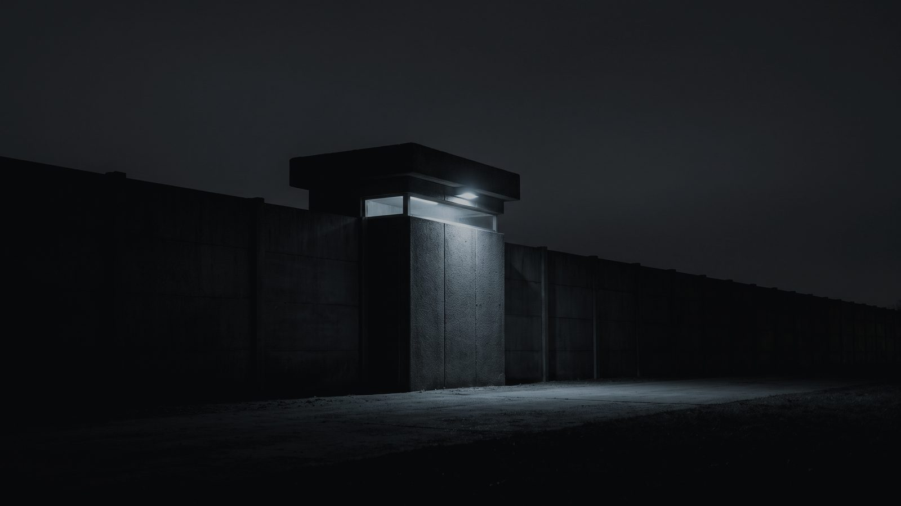
121 closed doors.
One opened for you.
Private automotive suites Lake Zurich, Illinois
Perimeter at night stand-in, not the property
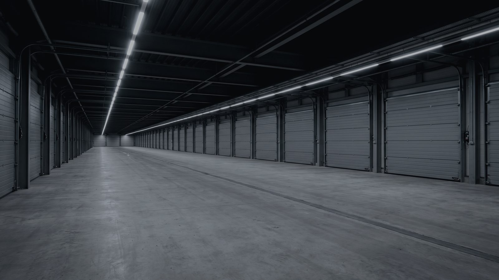
Arrival
11 buildings 121 suites
Internal frontage stand-in, not the property
121 private suites, 11 buildings
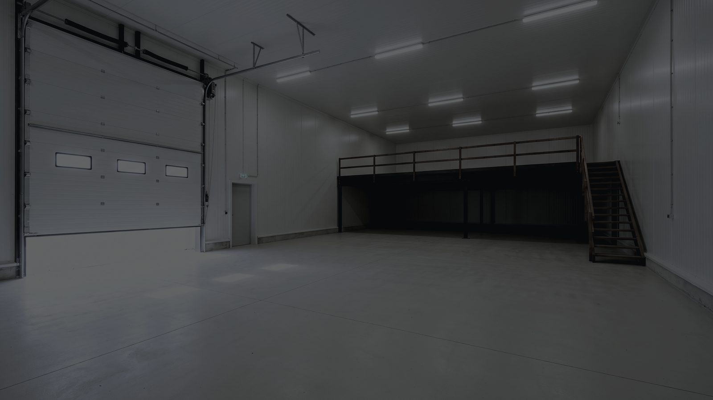
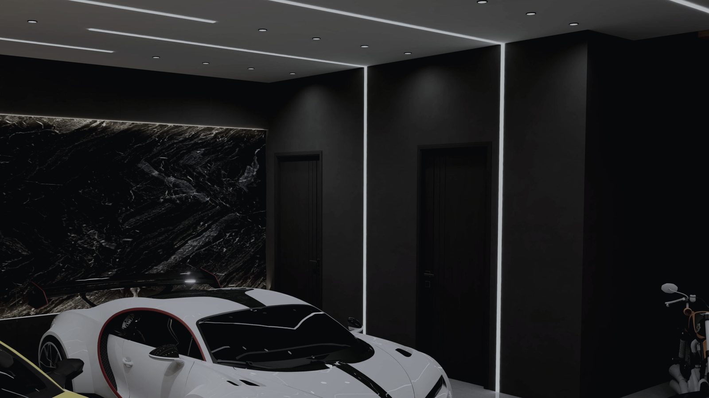
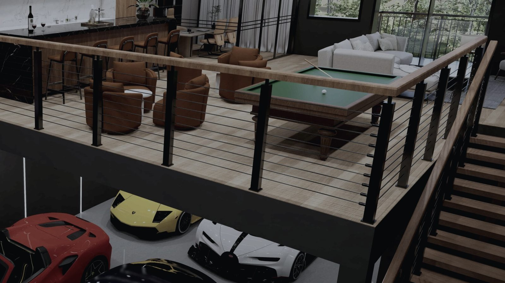
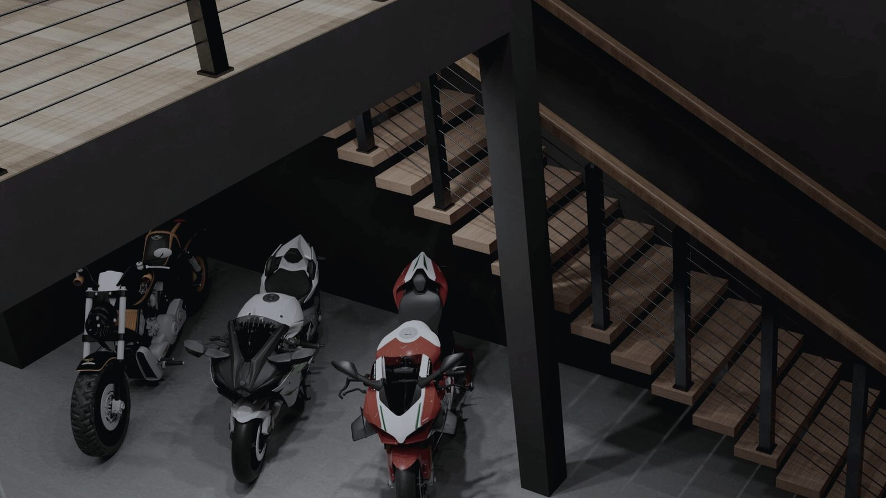
03 — The suite
The room is the product.
What you are actually given.
Selected suite
- Type
- Type B
- Footprint
- 23′ × 50′
- Mezzanine
- 23′ × 31′ · 713 sq ft
- Total
- 1,863 sq ft
- Capacity
- ≈4 cars, 2 motorcycles
- Electric
- 100 amp service
- Climate
- Climate controlled
- From
- $549,000
Selected footprint · 23′ × 50′
Suite as delivered stand-in, not the property
04 — Machine / space
Someone specified this building properly.
Holds temperature against an Illinois winter. Stand-in, not the property.
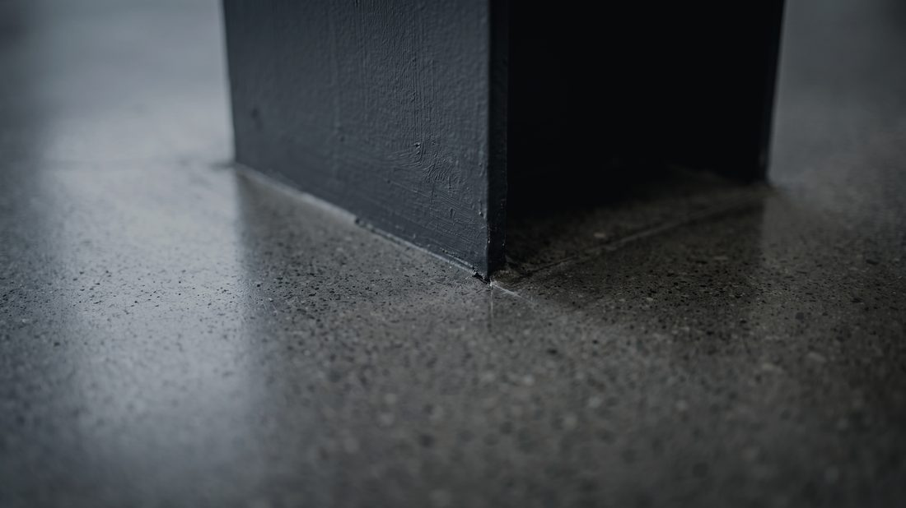
Takes a jack and a lift without marking. Stand-in, not the property.
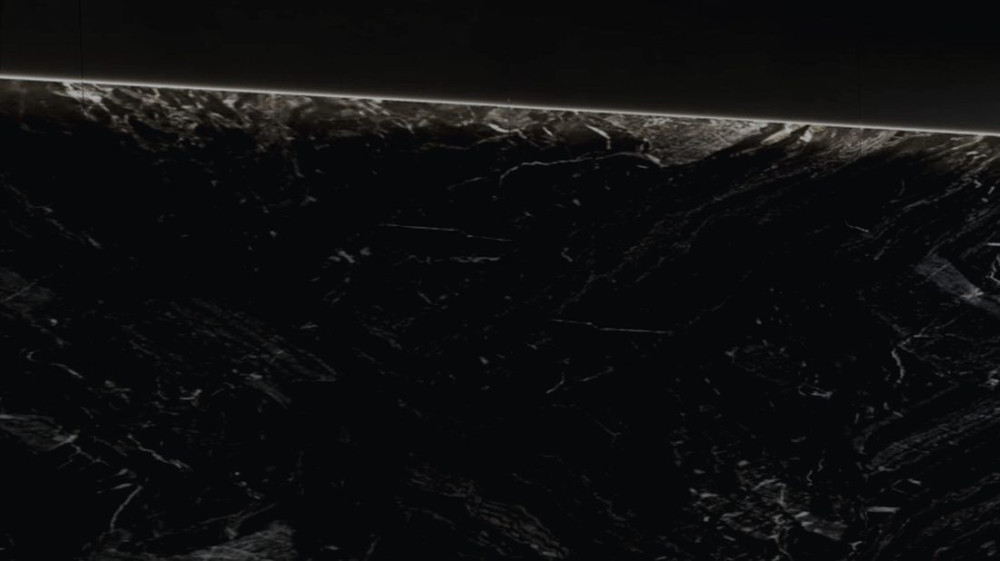
Reads paint and panel gaps at arm's length. Developer render.
05 — The club
The paddock has people in it.
The clubhouse is not an amenity that happens to be nearby. It is the reason the compound is a community rather than a storage yard: the machines are through the glass, and the people who own them are standing in front of it. Rooftop bar and lounge, racing and golf simulators, a wellness centre, business and event space, and a detailing and customisation shop on the same site.
Amenities
- 01Clubhouse with rooftop bar and lounge
- 02Racing and golf simulators
- 03Wellness centre
- 04Business and event space
- 05Detailing and customisation
- 06Gated community
- 0724/7 surveillance
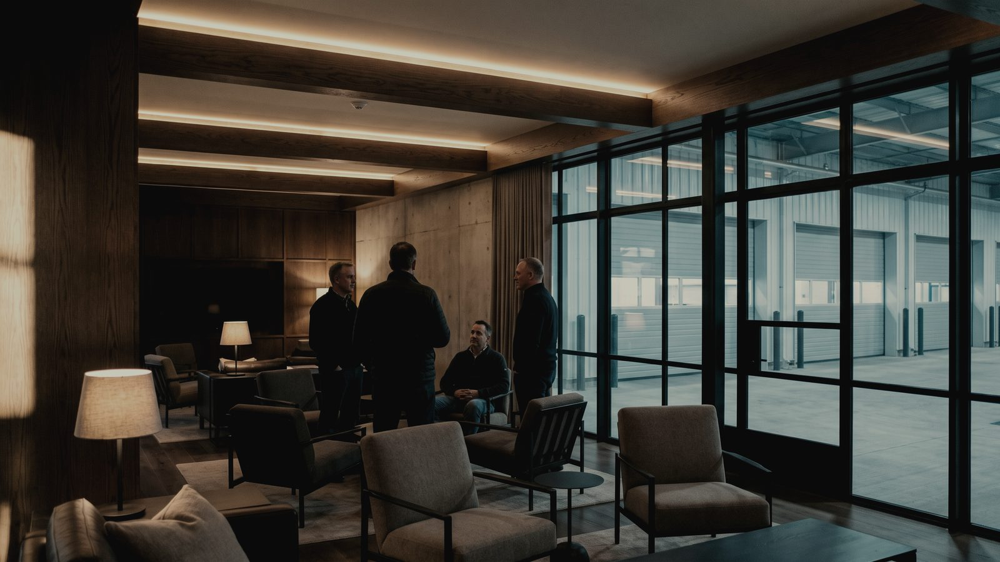
Club interior, the compound beyond · stand-in, not the property.
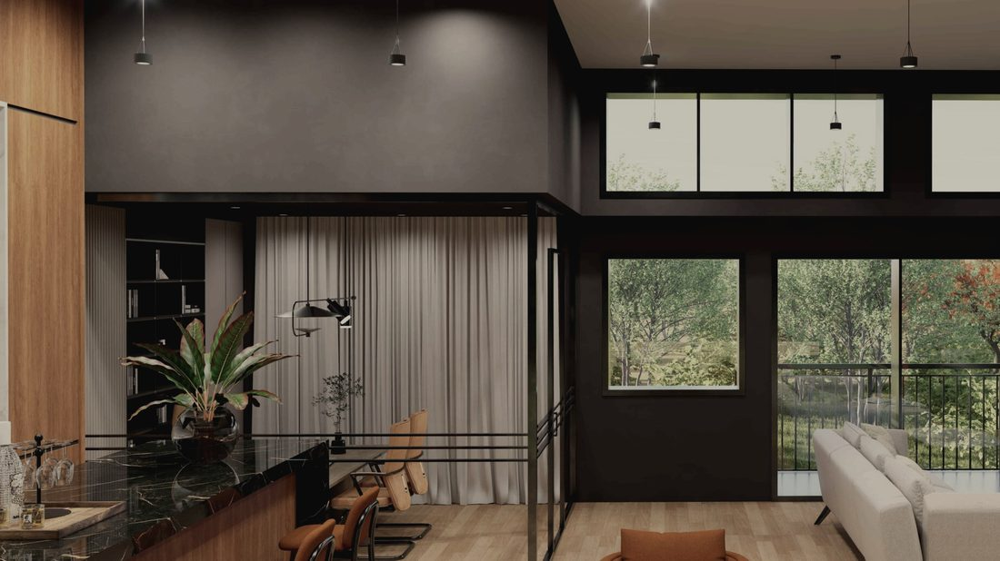
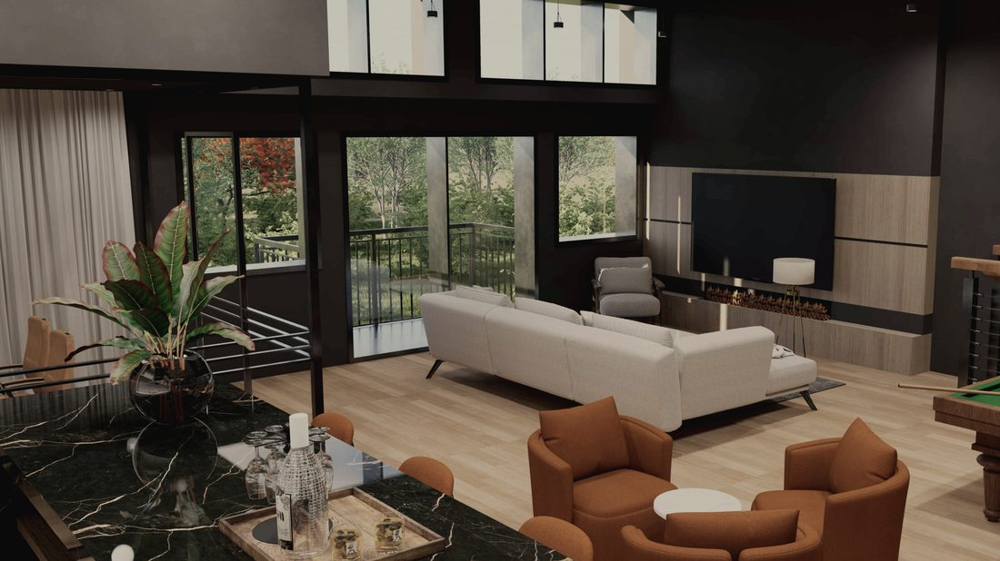
06 — Community / ownership
What you own, and on what terms.
Two types, one depth
Both types are 50 feet deep with a 31-foot mezzanine. Only the width changes — 30 feet against 23 — so the difference is a width, not a size. The dimension line below runs the full 50 feet and does not move.
- Footprint
- 30′ × 50′
- Ground floor
- 1,500 sq ft
- Mezzanine
- 30′ × 31′ · 930 sq ft
- Total
- 2,430 sq ft
- Capacity
- ≈6 cars, 3 motorcycles
- Units
- 26 of 121
- From
- $699,000
Included in every suite
- 01Climate controlled
- 02Pedestrian door
- 03Bathroom with walk-in shower
- 04LED lighting throughout
- 05Insulated walls, ceilings and garage door
- 06100 amp electric service
- 07Commercial-grade overhead garage door
- 08Wood staircase and railings to mezzanine
- 09Upgrades available through the onsite designer
Availability
- Total suites
- 121 across 11 buildings
- Available
- 98 (81%)
- Sold
- 23 (19%)
- Type A
- 21 of 26 available
- Type B
- 77 of 95 available
Figures as of 4 Sep 2026. Availability changes; confirm on enquiry.
24455 US-12, Lake Zurich, Illinois 60047. A second location in South Florida is announced and pending; no site, unit count or pricing has been published for it.
The community is gated, with 24/7 surveillance. Access terms are set by the association and confirmed at contract.
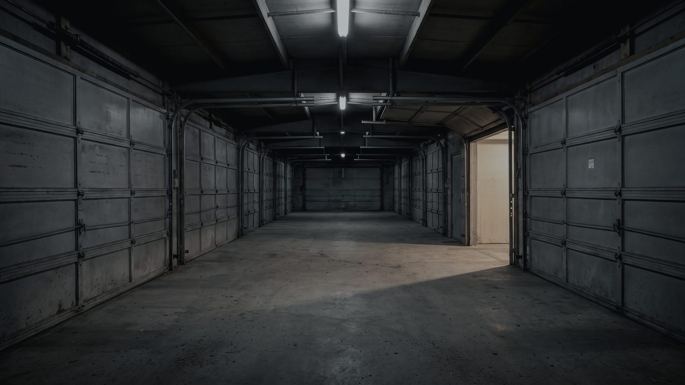
07 — Private tour
Come and
stand in it.
Type B 23′ × 50′ 1,863 sq ft
24455 US-12, Lake Zurich, Illinois 60047